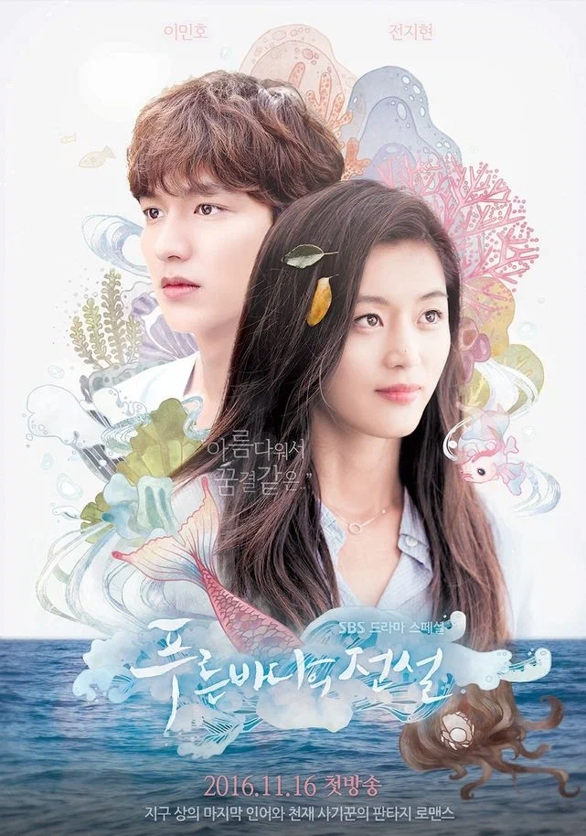

Дорама Что случилось с секретарём КИМ ?
Кохан Валентина
Пробую себя в веб-разработке
Что я могу рассазать о себе???
Пожалуй это то, что я люблю животных, в особенности собак. Они все такие милые. В своём детстве я хотела открыть свой приют для животных. Может быть в этом мне поможет Web-разработка?

Обучение в Codegirl
Немного предыстории...С самой школой я была знакома несколько лет(если быть точнее, то была подписана на блог Ксении). Меня настолько сильно заинтересовала тема Fronted-разработки, что через несколько лет я решила преобрести обучение. И наконец-то начала обучение. Пока что я нахожусь в самом начале пути, поэтому говорить пока рано о моих результатах.
Отзыв о школе я оставлю после окончания обучения. Пока что мне всё нравится.
Семья
Что же по поводу семьи? То у меня есть маленький сынок, ему 5 лет. Он в этом году пойдёт в школу. Я его очень люблю. Мы стараемся часто проводить время вместе. Из любимых развлечений: прогулки на улице, собирание конструктора или просмотр мультфильмов.

Мои любимые сериалы
Дорама Легенда синего моря
Дорама Силачка То Бон-сун
Мои социальные сети и почта